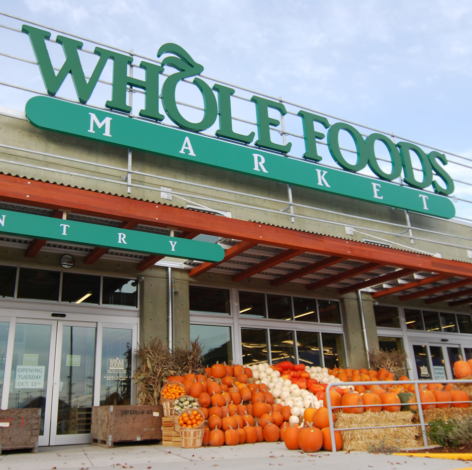
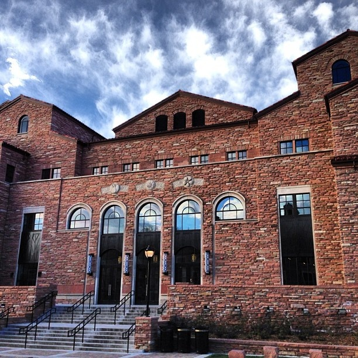

Whole Foods Market Pearl
Front End Team Member
2905 Pearl St, Boulder, CO
July 2015 - April 2016
Bagger
- Bagged groceries for customers
- Returned carts to the corrals
- Other minor tasks that helped maintain efficiency
Cashier
- Rang up customers quickly and efficiently without sacrificing quality customer interaction.
- Memorized hundreds of PLU's.
- Participated in fundraisers -- I was a top earner at my store!
Customer Service Representative
- Point of contact for customer complaints
- Managed customer returns
- Tracked all Front-End spoilage
- Answered phones and made store-wide anouncements
Ameritch Construction
Boulder/Denver Area
May - August 2012
Window Canvaser
- Door to door window sales - got people to sign up for an estimate on new windows for their houses
- Largely unsupervised - would go out with a partner and cover neighborhoods

University of Colorado - C4C
Boulder, Colorado
August - December 2011
Dishwasher
- Cleaned dishes in CU's dining hall
- Mopped floor and swept at the end of the night
January - May 2012
Nightly Cleaning Crew
- Vaccuumed and swept CU's dining hall after it closed
- Polished chairs and Tables